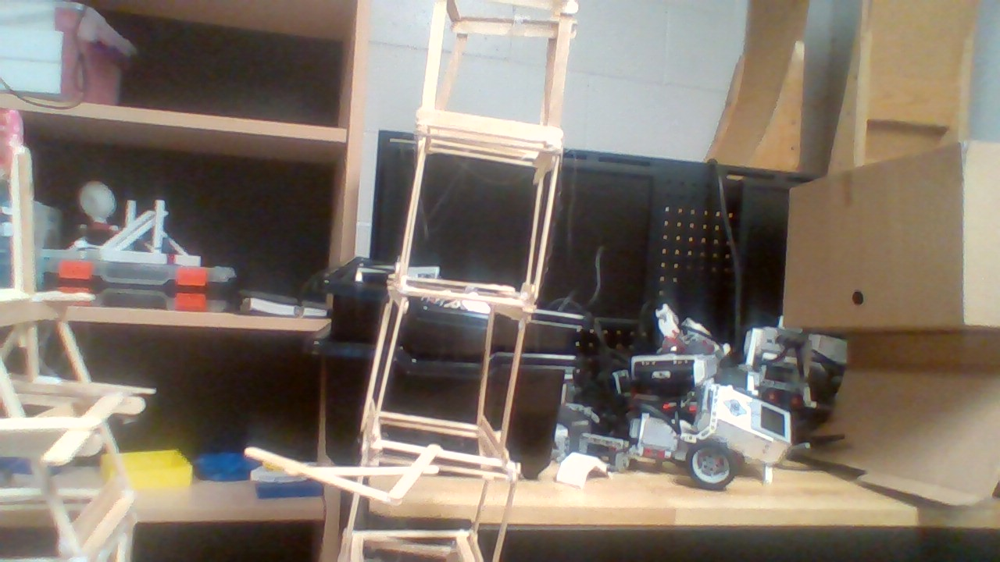
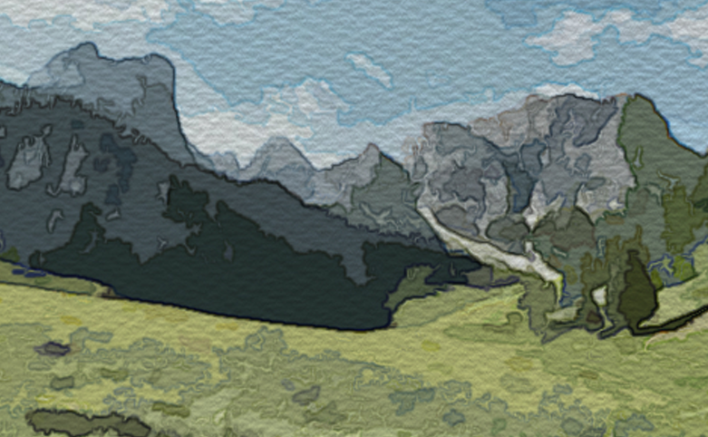
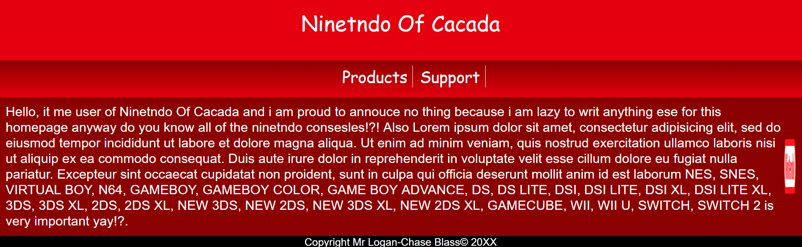
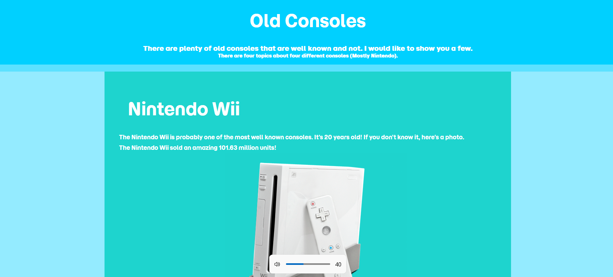
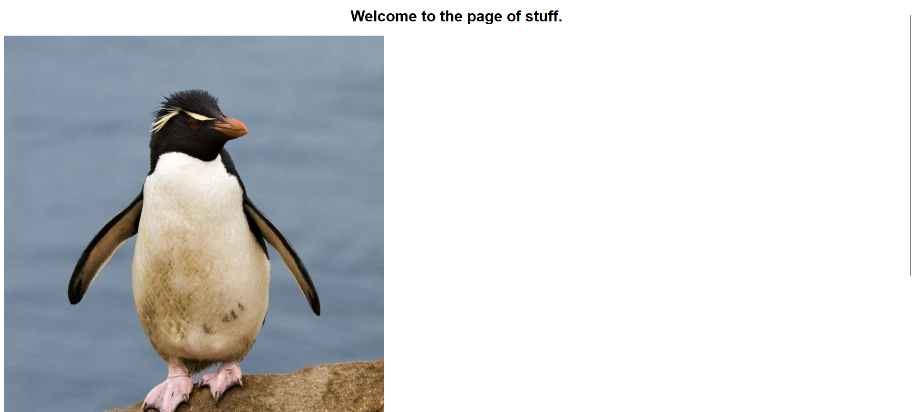

My iTec Portfolio
Welcome to my iTec Portfolio!
Here you can view all the stuff that I made in the iTech program.
To view a website, click on the website photo and it will bring you to it.
Images, Websites Videos




